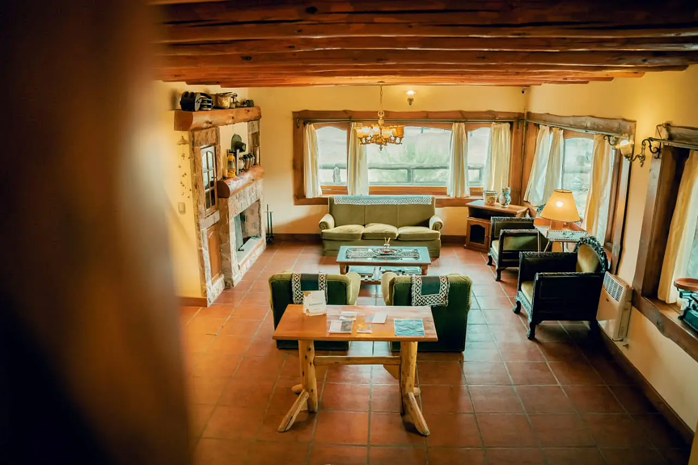
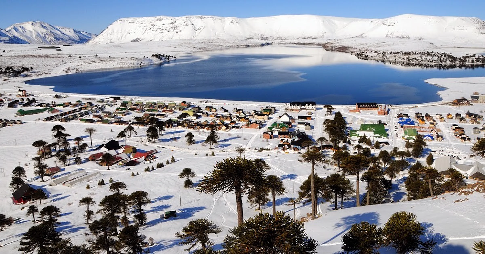
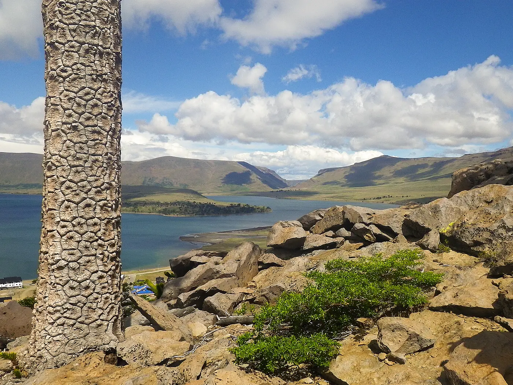

Trawen Hostal Boutique
Hasta 13 huéspedes · 5 habitaciones
Clima en Caviahue
Buscando el pronóstico…
Pueblo a 1.600 m · datos de Open-Meteo

Departamentos, cabañas y hostal boutique en el corazón de la Patagonia. Encontrá tu lugar en Caviahue para descansar, compartir y disfrutar con tu familia, amigos o pareja.
Abierto todo el año
Caviahue, Neuquén, Patagonia Argentina. Los cuatro alojamientos y lo que tenés cerca: almacenes, restaurantes, salud, cascadas y el centro de ski.
Lago, araucarias, volcanes y cascadas. Así es el lugar que te espera en cada estación.
Nacimos en Caviahue, con la idea de recibirte en alojamientos con identidad y atención local. Cada lugar tiene su personalidad; todos comparten la calidez de sentirse en casa.
El lago, la montaña y las cuatro estaciones hacen el resto. Elegí tu refugio y disfrutá la Patagonia a tu ritmo.
Tu reseña ayuda a otros viajeros a elegir y a nosotros a mejorar. Elegí dónde te quedaste y dejá tu opinión en Google: lleva un minuto.
Cómo llegar, qué hacer y todo lo que conviene saber antes de viajar a Caviahue.
Hacer otra preguntaCaviahue está en el norte de Neuquén, a unos 360 km de la ciudad de Neuquén, todo por asfalto. El camino más usado es la ruta nacional 22 hasta Zapala, la provincial 21 hasta Loncopué y la provincial 26 hasta el pueblo: son entre 4 y 5 horas de viaje. El aeropuerto con vuelos regulares más cercano es el de la ciudad de Neuquén.
Trawen está a 20 metros de la avenida Quimey Co, frente al lago. Los Basaltos queda a dos cuadras del lago, en el centro. La Maison está en pleno centro del pueblo y Ekamai, cerca del camino al centro de ski. En el mapa de esta página cada alojamiento tiene su botón «Cómo llegar», que abre la ruta en Google Maps.
En invierno: esquí y snowboard en el centro de ski, paseos por la nieve y termas. En verano: el lago y su Parque Náutico, el Salto del Agrio, las Cascadas del Agrio, las termas de Copahue y senderos como los de la Cascada Escondida, la Cascada de la Usina, la Laguna Escondida y el Puente de Piedra.
Todo el año. La temporada de nieve suele ir de junio a septiembre, según el clima de cada invierno. De diciembre a marzo es la mejor época para cascadas, termas y caminatas. Nuestros alojamientos están abiertos los doce meses.
Llevá cadenas para el auto y revisá el estado de las rutas en Vialidad Provincial de Neuquén antes de salir. Con nevadas, el último tramo de la ruta 26 puede requerirlas. En esta página tenés el pronóstico de la semana.
Sí, en Los Basaltos, La Maison y Ekamai. Trawen no admite mascotas.
El check-in es desde las 14:00 y el check-out hasta las 10:00 en todos los alojamientos.
Todos los alojamientos incluyen sábanas, toallas, calefacción, WiFi y cocina equipada (en Trawen la cocina es de uso común). Trawen, Los Basaltos y Ekamai tienen WiFi Starlink. Las comodidades de cada uno están en su ficha.
Hay opciones para parejas, familias y grupos: departamentos para 3, 4 y 5 personas en La Maison y Los Basaltos, departamentos para 4 y una cabaña para 6 en Ekamai, y en Trawen habitaciones de 2 a 4 personas o el hostal completo para hasta 13.
Con el botón Reservar de cada alojamiento elegís fechas y ves la disponibilidad online. Si preferís, escribinos por WhatsApp y te ayudamos a elegir. Cada alojamiento informa su política de cancelación al momento de reservar.
Sí. Caviahue tiene supermercado, almacenes, restaurantes, casas de té, estación de servicio y Centro de Salud. Los marcamos en el mapa para que los encuentres rápido.

Escribinos y te ayudamos a elegir el alojamiento ideal para tus fechas.